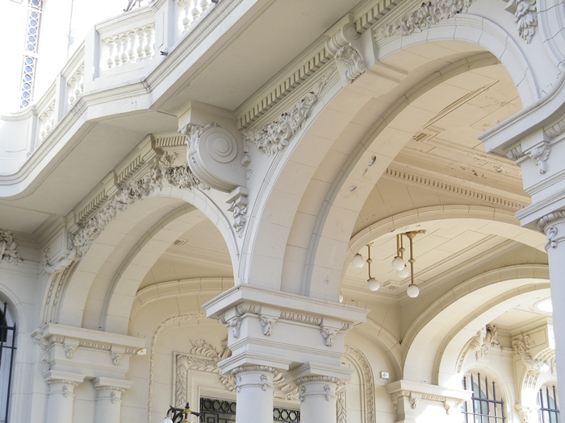
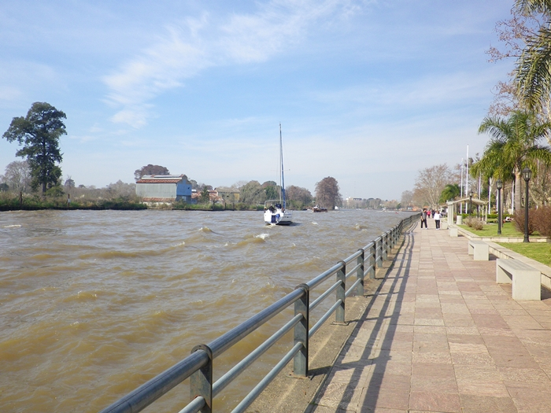
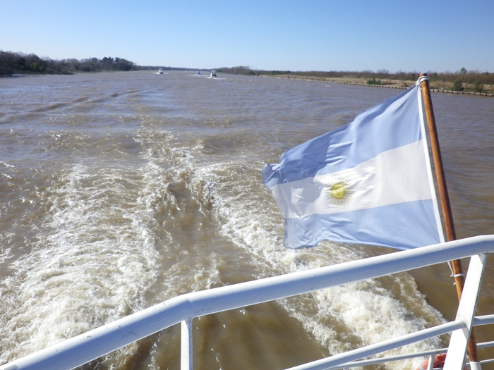
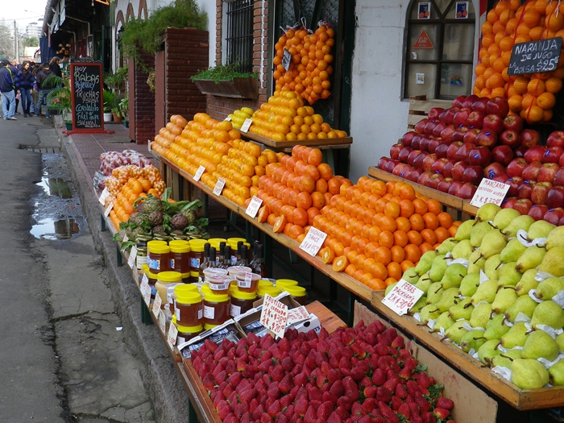

City of Tigre
The city of tigre is a place of great variety of opportunities. You can take full advantage of the possibilities that are at each step.
Since its admission to the city of Tigre, give you the welcome a boulevard with an artificial lake that denotes the relationship that this city shares with the rivers of the Delta and the multiple options that the visitor will discover.
The architecture of the place is noted for high buildings and traditional residential area, but also by buildings of modern styles, accessible and sustainable.
The city presents opportunity to sports days, with its walking and recreation, as well as; variety of nautical activities. The locals are very friendly and they highlighting by the constant satisfaction of its visitors.
You will find the way to organize your stay in the city: know The Port of Fruits Tigre, travel through the rivers of the Delta until you reach your favorite place, discover the Museum of Art Tigre between more and more options.
Allow yourself connect with nature, you visit the city of Tigre!!!.
Museum of Art Tigre
In an area of wide dimension find the Museum of Art Tigre; building emblematic ,with unique architecture and imposing that booking a collection of Argentine art of the 19th and 20th centuries.
Around it, also several artists have given presence with his works there exposed.
Impeccably are maintained its gardens with a variety of flowers and greenery that from its landscape design it give start to art in the city of Tigre.
View gallery...Walk Lavalle and Victorica
From the Bridge Rocha passing by the Momunent in homage to the Heroes of Malvinas Islands up to one of the entrances to the Museum of Art Tigre, we cross the walk Lavalle and Victorica discovering to its step diversity of options to enjoy.
From at the building of the Naval Perfectura starts its journey a walk with places to rest, we find the Naval Museum of the Nation, restaurants and nautical services.
A beautifull walk with its tree and palm trees of diferents species.
A tour indispensable in the city of Tigre!!!
View gallery...Islands and Recreation
The Islands of the Delta and its recreations are the ideal option for go out of the life busy of the city.
From the fluvial station depart the boats that bring it closer to the islands that offer accommodation services, clubs, and residences of the most varied styles.
In these places you can enjoy fun, sport and days spa , beaches and also, the tranquility and well-being of the places intimately related with the nature that distinguish the city of Tigre.
View gallery...Port of fruits Tigre
On a tour of the streets around the docks you will find innumerable products of natural origin and craft, as well as; cutting edge designs.
The Port Of Fruits of Tigre offers restaurant, fast food, fruit juices and various services at your fingertips.
In The Port Of Fruits of Tigre you will find its Ferial Square that opened on 26 November 1998, surrounded by posts with outstanding and innovative craft products.
You will find in its surroundings, commercials galleries and diferents attractions, typical of the city of Tigre.
View gallery...